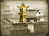
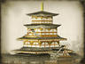

Requires
- Buildings: 
- Resources:
Enables
- Buildings: 
Basic Building Statistics (can be modified by difficulty level, arts, skills, traits and retainers)
- Cost: 3000
- +10 to the charge bonus of all units recruited in this province
- -10% to the recruitment costs of traditional units in this province
Clan Effects
- -1 to modernisation (clan development)
Description
When the spirits move them, mortal men can achieve the miraculous.
This province has a site of religious significance. By developing this site, the spirits of troops recruited here are raised, and their devotion to the old ideals of duty, courage and honour are reinforced. A shrine is not just important because of a building, but because of the place's spirit. People will always appreciate the beauty of the buildings around a shrine, but it is the fundamental sanctity of the place that is important. As long as the kami are respected and honoured, the shrine remains a source of spiritual strength. Many shrines in Japan are now historical monuments as well as revered religious sites, and this means that many have been listed as World Heritage Sites.